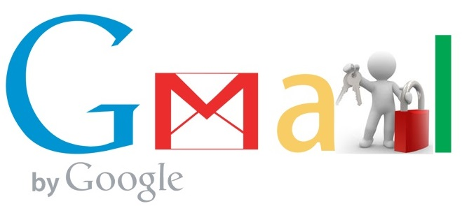

Dalam perkembangan teknologiyang semakin pesat khususnya internet. Email menjadi hal yang wajib di miliki, tidak hanya untuk keperluan mengirim/menerima pesan tetapi email juga berguna sebagai penghubung dengan berbagai aplikasi penting , seperti aplikasi yang berhubungan dengan perbankan. hal ini membuat Email menjadi sasaran utama para hacker atau orang yang tidak bertanggung jawab untuk mencuri data penting anda.

Salah satu layanan email yang paling banyak digunakan adalah Gmail. Gmail sendiri merupakan produk keluaran google yang memberikan pelayanan surat elektronik secara gratis. Jika anda menggunakan Gmail sebagai layanan surat elektronik, sebaiknya melakukan 8 langkah berikut untuk melindungi akun gmail dari serangan orang yang tidak bertanggung jawab atau hacker.
1. Mengecek virus yang ada dikomputer anda
Pertama anda harus selalu mengecek virus yang ada di komputer anda, karena virus ini dapat mengambil data pribadi yang ada di komputer dalam berbagai cara, seperti menyusupi sebuah program dan lainnya. gunakan antivirus terpercaya untuk memindai komputer/laptop anda lalu jika ada program yang mencurigakan segera hapus
2. Lakukan pemeriksaan akun
Google menyediakan fitur pemeriksaan akun silahkan mengunjungi link berikut
akun saya dan pilih security checkup atau pemeriksaan akun. pastikan tidak ada hal yang mencurigakan.
3. Perbarui pilihan pemulihan akun
Dalam menjaga keamanan tentu diharuskan adanya backup kontak yang dapat dihubungi saat akun kita dalam masalah. untuk itu pastikan bahwa pilihan pemulihan akun merupakan data terbaru. untuk mengeceknya anda dapat mengunjungi link berikut
pemulihan akun
4. Verifikasi 2 langkah
Verifikasi 2 langkah merupakan cara untuk menambahkan verifikasi keamanan selain password, yaitu dengan mengirimkan kode ke ponsel yang sudah didaftarkan.
5. Selalu lakukan update OS dan Aplikasi
Pastikan anda selalu mengupdate sistem operasi dan juga aplikasu seperti chrome yang ada dikomputer. karena salah satu tujuan dari update adalah menutup celah keamanan dari versi sebelumnya.
6. Jangan menggunakan password akun gmail
Sangat disarankan agar tidak menggunakan password akun gmail ke website lain. seperti situs sosial media, game , dan lainnya. karena jika situs lain mengalami penyusupan maka akun gmail anda pun akan diketahui.
7. Lindungi password
Pastikan untuk tidak memasukkan password email di alamat url dari situs yang tidak tepercaya. Selalu buka langsung mail.google.com atau accounts.google.com/Login.
Jangan pernah menulis, mengirimmelalui email, atau memberi tahu orang lain tentang password anda. Google juga tidak akan pernah mengirim email untuk meminta sandi atau informasi penting lain. selain itu gunakan susuanan kata rumit yang terdiri dari angka, huruf dan tanda baca.
8. Hindari Software atau aplikasi Bajakan
Software atau aplikasi bajakan sangat rentan di masuki virus. biasanya software tersebut sudah di sisipi oleh script jahat yang dapat mencuri data si pengguna. oleh karena itu demi menjamin keamanan akun email anda hindari menginstall software atau aplikasi hasil bajak.
catatan : Sebaiknya lakukan langkah-langkah tersebut lebih sering jika terjadi gejala aneh dandi komputer, misalnya lambat dan iklan bermunculan.

 Perbedaan Jaringan 3G dan 4G
Perbedaan Jaringan 3G dan 4G
 Jumlah Core dan Hubungannya dengan
Jumlah Core dan Hubungannya dengan Pengertian Subnetting IP Address
Pengertian Subnetting IP Address  Cara Mengatur Layar di Windows Saat
Cara Mengatur Layar di Windows Saat Pengertian dan Cara Defrag/Defragment
Pengertian dan Cara Defrag/Defragment  Macam macam file audio dan
Macam macam file audio dan  Apa itu Extreme Programming ?
Apa itu Extreme Programming ?